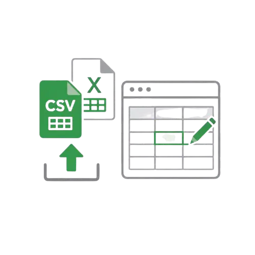
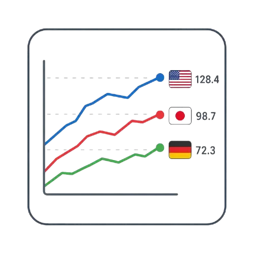

SNSに最適な縦型動画でデータを図解
スマホの縦画面表示に合わせた、スタイリッシュな線グラフレースをアニメーション付きで書き出せます。複雑に変化する数値の推移や市場動向をわかりやすく解説する動画素材として、各種SNSでの情報発信に最適です。線の太さやフォント、カラーパレットなどを直感的に調整して、美しく説得力のある図解をデザインできます。
特長
必要なものはブラウザだけ。データを入れればすぐ描画されます。

CSV / Excel に対応
手持ちの表データをそのままアップロード。ブラウザ内の表で直接入力・編集もできます。

見た目を自由に設定
色・フォント・キャンバスサイズ・線の太さ・ラベルなどを細かく調整できます。

線の末端に国旗＋値
各系列の終点にアイコン（国旗など）と最新値を表示。どの線が何かひと目で分かります。
他グラフと相互切替
設定内のドロップダウンでバーチャートレースなど他のグラフへ切り替え。編集中データも引き継げます。
線グラフレースの活用シーン例
さまざまな場面で、データの変化を分かりやすく伝えます。
ビジネス・会議
時系列推移の報告
売上やアクセス数など、複数の項目の変化をひと目で比較でき、会議やプレゼンの資料に最適です。
ブログ・Webサイト
データや統計の図解
記事内の統計データや調査レポートを視覚化し、読者に内容を分かりやすく伝えます。
SNS（X/Instagram）
トレンドや情報の発信
データを楽しく可視化できるため、SNSでのトレンド情報やデータ分析の視覚的な発信に役立ちます。
使い方は3ステップ
はじめてでも数分で線グラフレースが完成します。
1
データを用意
1列目に項目名、2列目にカテゴリ名（任意）、3列目に画像URL（任意）、4列目以降に数値を入れた CSV / Excel を用意します。カテゴリを入力すると、グループごとに自動で色分けができます。
2
アップロード or 直接入力
ファイルをアップロードするか、ツール内の表に直接データを打ち込みます。
3
設定して保存
色やフォント・線の太さを整え、完成した線グラフレースを保存します。
さっそく作ってみましょう
今すぐ無料で作る更新履歴
- New 2026.07.10 カテゴリ列への対応を行い、グループごとの自動色分けや凡例表示機能を追加しました。
- 2026.07.01 線グラフレースとバーチャートレースの相互データ切り替え機能を追加しました。
- 2026.06.29 CSV / Excelの読み込み互換性を向上させ、一部の特殊な文字コードでも正しく読み込めるように修正しました。
- 2026.06.27 アニメーション再生時のデザインカスタマイズオプション（背景色、グリッド線など）を追加しました。
- 2026.06.25 バックアップ機能（保存・復元）をリリースしました。ブラウザ内に自動保存されるようになります。
- 2026.06.24 モバイル表示に最適化し、スマートフォンでの表示速度と操作性を改善しました。
- 2026.06.23 グラフの見た目を自由にカスタマイズできるフォント・サイズ設定機能を追加しました。
- 2026.06.22 線の末端にアイコンと最新数値を表示する機能を追加しました（線グラフレース）。
- 2026.06.21 バーチャートレースのSNS（縦動画）向けレイアウト調整機能をリリースしました。
- 2026.06.20 グラフの再生・一時停止・巻き戻し機能のUIを刷新し、操作性を向上させました。
- 2026.06.20 GraphRace Studioを公開し、無料でのグラフ動画作成機能の提供を開始しました。